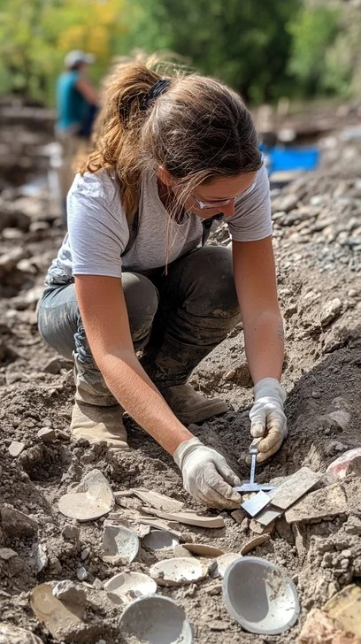

Dr. Isla Raman
Archaeologist
Specializes in ritual tools and mountain sanctuaries. Holder of 3 Fulbright fellowships, Dr. Raman has spent over 15 years excavating sacred sites across the Himalayas and Andes.
Her groundbreaking work on pre-Columbian ceremonial practices has reshaped our understanding of ancient spiritual traditions.
Read Full Bio